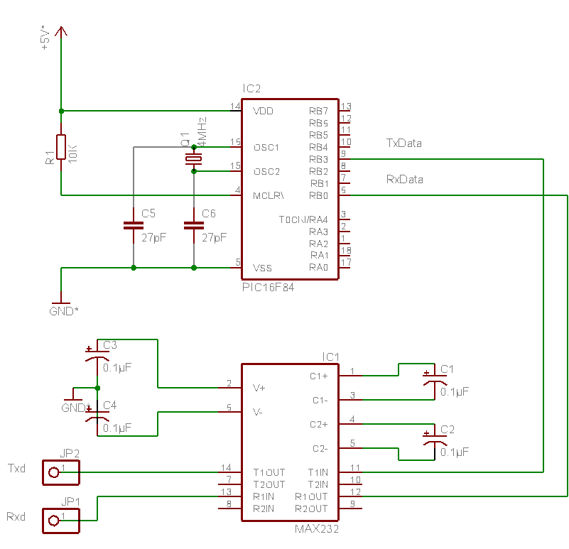
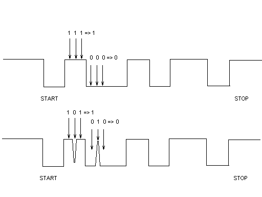

SIMULER UNE LIAISON SERIE ASYNCHRONE SANS UART.
Tous les PIC ne disposent pas d'un UART (Universal Asynchronous Receiver Transmitter). Pourtant, il est possible d'utiliser ces PIC (16F84, 12C671...) dans des applications nécessitant occasionnellement une liaison série asynchrone. Il faut alors simuler par soft cette fonction. Ne vous attendez pas à faire du full-duplex à 115Kb/s. En revanche, à des débits compris entre 1200 et 9600 Bds en half-duplex cela est tout à fait réalisable.
Le PIC16F84 utilise la ligne RB3 en sortie (Txd) et la ligne RB0 en entrée (Rxd) ce qui permet éventuellement de configurer en ligne d'interruption externe pour détecter un 'START' lors de l'arrivée d'un caractère. Le MAX232 connu de tous adapte les signaux du PIC à la norme RS232.

Le programme qui suit n'a rien de très original, je me suis inspiré des programmes les plus couramment diffusés sur le web, pourtant la fonction getch() simule ce que fait le hard. En effet, le programme effectue trois scrutations pendant la durée d'un bit, ce qui permet de lever le doute en cas d'erreur de réception.

Bien entendu vous devrez traiter un caractère reçu pendant la durée du bit start soit au minimum 400 µs à 2400 Bds, 600 µs avec 1,5 bit stop. On peut en faire des choses en 600 µs. Trop court ? La solution est alors de commander une ligne RTS de la RS232 et ainsi bloquer le flux de données pendant le traitement.
Pour changer le débit modifier BRATE, TX_TEMPO et RX_TEMPO.
Le programme d'exemple émet une chaîne de caractères et retransmet les caractères reçus. Il est impératif de compiler le programme en "Full Optimization" car les boucles d'attente doivent s'éxecuter en 3 cycles d'horloge.
(Charger ce programme rs_pic.zip)
/**********************************************************************
* RS_PIC
* Simulation d'un UART 2400,N,8,1
* Auteur: Claude Dreschel
* Claude Dreschel <Claudedel@wanadoo.fr>
**********************************************************************/
#include <pic1684.h>
#define XTAL 4000000 // 4.000 MHz
#define PORTBIT(adr, bit) ((unsigned)(&adr)*8+(bit))
#define ON 1
#define OFF 0
/* Baud rate */
#define BRATE 2400 //2400 bauds
/* Parametres */#define DLY 3 // 3 cycles de boucle attente
#define RX_TEMPO 25 // Fixe le temps de scrutation d'un bit(9600=>15)
#define TX_TEMPO 24 // Fixe la duree d'un bit (9600=>14)
#define DELAY(tempo) (((XTAL/4/BRATE)-(tempo))/DLY)
/* Variables */
static bit RxData @ PORTBIT(PORTB,0); // Rxd > RB0
static bit TxData @ PORTBIT(PORTB,3); // Txd > RB3
static bit receive,transmit;/************************************************************/
unsigned char getch(void);
void putch(unsigned char valeur);
void put_string(const unsigned char * s);
void init_pic(void);
/************************************************************
Programme principal
- initialisation du pic
- en boucle, lecture d'un caractere et émission sur Txd.
************************************************************/
void main(void)
{
unsigned char car;init_pic();
put_string("TEST DE LA LIAISON SERIE DE MON PIC");
do
{
car=getch();
putch(car);
}while(!0); // le programme continue
}/*******************************************************************
* fonction getch(): lecture d'un caractere sur
* la liaison serie. A 2400 bits/S
* la scrutation se fait a trois reprises
* ! ! !
* |-----------| toutes les 100 µS pd la
* presence d'un bit et ce toutes les 400µS.
* (dly) 2400,N,8,1
********************************************************************/
unsigned char getch(void)
{
unsigned char nb_bit, dly,caractere;
static bit Rx1,Rx2;caractere=0;
while(!RxData); //Attente bit stop
for(;;) {
while(RxData)
continue; // Attente bit start
dly = DELAY(RX_TEMPO)/2;
do;
while(--dly); // temporisation 1/2 start
if(RxData)
continue; // Bruit
receive=ON;
nb_bit = 8;
caractere = 0;
dly = DELAY(RX_TEMPO)/4; //100µS
do;
while(--dly);
if(RxData)
continue; // Bruit
do {
dly = DELAY(RX_TEMPO)/2; //200µS
do;
while(--dly);
Rx1=RxData;
dly = DELAY(RX_TEMPO)/4; //100µS
do;
while(--dly);
Rx2=RxData;
dly = DELAY(RX_TEMPO)/4; //100µS
do;
while(--dly);
Rx1 ^= Rx2;
if(Rx1) Rx2=RxData;
caractere = (caractere >> 1) | (Rx2 << 7);
} while(--nb_bit);
receive=OFF;
return (caractere);
}
}
/*******************************************************************
fonction putch(): ecriture d'un caractere sur
la liaison serie.
*******************************************************************/
void putch(unsigned char valeur)
{
unsigned char nb_bit, dly;
transmit = ON;
nb_bit = 9; // 1 start+8 bits
TxData=0; // bit start
do
{
dly = DELAY(TX_TEMPO); // duree d'un bit
do;
while(--dly);
if(valeur & 1)
TxData = 1;
else
TxData = 0;
valeur = (valeur >> 1);
} while(--nb_bit);
TxData = 1;
dly = DELAY(TX_TEMPO); // duree d'un bit
do;
while(--dly);
receive=OFF;
}
/*******************************************************************
* fonction put_string(): ecriture d'une chaine de caracteres
* sur la liaison serie.
********************************************************************/
void put_string(const unsigned char * s)
{
while(*s)
putch(*s++);
}/**********************************************************
init_pic(): initialise le PIC
***********************************************************/void init_pic(void)
{
TRISB = 0x1; // bit 0 input
}